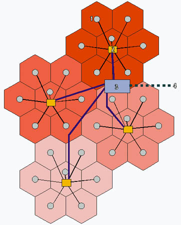

| PHREAKING | COUNTERSTRIKE - 1 |
Le
but de cet article est de vous faire acquérir une "culture générale"
du point de vue du phreaking; je vais essayer de recenser quelques boxes que
je connais (+ ou - bien) et pis vous les décrire en deux mots.
En fait, si vous etes intéressés par telle
ou telle box et ke celle ci est réalisable par nous ( ce ki sera pas
le cas de toutes ), ben vous pouvez me demander qqes renseignements supplémentaires:
976@Tipiak2000.com...et pis ben pourkoi poa un article sur la box en kestion
si on reçoit beaucoup de mails =)
let's start...
-=La beige box=-
Arf, bon ben ça tout le monde connait, sinon, allez voir sur Tipiak
En deux mots: cette box sert a se conecter physiquement sur une ligne téléphonique
NE NOUS APPARTENANT POA et donc davoir le phone gratos...(ah bon ?)
-=La black box=-
Pareil, si vous connaissez poa, allez voir là
.
En trois mots: box ki permet a celui qui effectue des appels entrants sur la
ligne où se trouve la box de ne pas payer les communicat° a Fonce
Telepute...par contre pour les appels sortants ca marche poa ...
(arf! ca srait trop beau !!)
-=La blast-box=-
Celle là, elle sert juste a saouler votre interlocuteur (et accessoirement
lui faire mal aux oreilles:)En fait, elle ne fait qu'amplifier notre voix, mais
a l'autre bout du fil, c'est poa trop agréable...
-=La blotto-box
:)=-
Aaaaah !Ca c'est de la box: on envoie un fort courant dans une
ligne (pas la notre !) et pis ca fait sonner tous les phones dans les parages
(voire ça les fait cramer) J'ai appris qu'au début, cette box
était du foutagedegueuledenewbie, mais y parait kelle a en fin de compte
vu le jour... (si vous zen savez +:976@Tipiak2000.com)
-=L'aqua-box=-
Elle ne nous interesse poa trop, car son utilité est de nous rendre intracable
pour le FBI...
-=La busy-box=-
Y'a pas plus con, mais ca peut quelques fois etre utile: elle est montée
su la ligne d'une barraque et, coupe le telephone de celle-ci... Si on l'appelle,
ca sonne occupé. Si lui décroche, il n'y a plus de tonalité
-= La crimson-box
=-
Encore un truc tout con: elle permet de faire patienter quelqu'un
au bout du fil, en coupant notre micro...
-= La light-box
=-
Branchée sur la ligne téléphonique d'une barraque,
elle permet de savoir si un téléphone est décroché
dans ladite barraque.
-= La neon-box
=-
C'est un ptit montage qui permet de faire passer des tones du PC
vers le phone...
-=La pearl box
=-
Elle est aux phreakers ce que le couteau suisse est a l'armée
suisse =)
Bref cette box génere les tones de 1 à 9999Hz...Vous voyez a koi
ca peut servir.
-= La power-box
=-
C'est une sorte de beige-box pour EDF...
-= La scarlet-box
=-
Utilisée pour obtenir plein plein plein de friture sur la
ligne, pour que la communication soit tres mauvaise... (pour faire chier le
peuple)
-= La blue-box
=-
Ca, c'est LA box ki tue: je vous décris un peu le fonctionnement
de celle-ci, mais je ne vais pas plus loin, ca c'est malheureusement plus possible
a faire en france.Bon, alors: vous apppelez un n° vert internationnal,
et a un certain moment, vous balancez a l'aide de la blue-box, une tone de 2600Hz
(ca s'appelle un trunk), et la, l'autocommutateur croit que vous avez raccroché,
et vous pouvez appeller gratos, en faisant passer votre appel par nimporte quel
pays (avec les n° verts) et pis le meilleur pour la fin: vous n'etes que
tracable a partir de l'endroit ou vous "blue-boxez"... Mais la merde maintenant
c'est que notre amie FT a installé des filtres pour les 2600, donc c'est
fini en france ca... ben oué fuck FT
-= La red-box
=-
Encore un truc poa faisable en france: aux US, la plupart des cabines
sont a pieces et pis les phreakers, ils ont trouvé le moyen de pas payer:
Les cabines téléphoniques emmettent une tone quand une piece est
introduite.La red box reproduit ces tones (au nombre de trois: une pour
5c, lotre pour 10c, et l'autre pour 25c).
La suite des Box-Files au prochain numéro =)
Bon, je préfère vous prévenir tout de suite que cet article ne va pas vous apprendre à phreaker des GSM (mais ça va venir, et on fera tout pour). Elle va juste vous donner les bases du fonctionnement du réseau GSM, l'organisation, le découpage du territoire, le déroulement d'un appel etc... En espérant que ça pourra donner des idées à certain, et faire avancer les choses.
I- La norme GSM
Le
GSM ( pour Global System for Mobile communication) est le successeur du Radiocom
2000. En effet, cette ancienne norme était analogique, ce qui posait
de nombreux problèmes: l'encombrement, la qualité audio médiocre,
et surtout une trop grande phreakabilité. En effet, il suffisait d'avoir
un graveur d'EEPROM et un fer à souder pour pouvoir cloner un téléphone
analogique. De plus, les écoutes téléphoniques étaient
facile, avec un scanner, on pouvait facilement intercepter une communication.
Le passage au numérique a résolu tout ces problèmes d'un
coup. Les portables ont pu être miniaturisés, l'écoute est
meilleure, et surtout, les communications son cryptées. Et c'est loin
d'être un cryptage de base, mais cette partie sera abordée plus
loin. Il y a aussi l'apparition de la carte SIM (Subscriber Identification Module),
qui stockera les infos de l'utilisateur, style son numéro, ses paramètres,
son répertoire...
En France, trois opérateurs se partagent le marché du portable:
SFR, Itineris et Bouyges Telecom (avis personnel: je les ai classés du
meilleur au moins bon). Bien sur, comme on est en France, il en faut bien au
moins un qui ne fait pas comme tout le monde. Là c'est Bouyges qui va
jouer ce rôle.
II- L'organisation du réseau
En raison du grand nombre d'abonnés (environs 16 millions de personnes jusqu'à maintenant en France), et comme il fallait que la communication ne soit pas interrompue même si la personne se déplace, il a fallu diviser le territoire en cellules.
|  |
1 - Une cellule est la plus petite division. Elle contient un emetteur-recepteur, encore appelé "station de base" 2 - Les "station de base" sont regroupées en divisions plus grandes, et gérée par des "controleurs", qui sont chargé notamment d'assurer la continuité des communication lorsque l'utilisateur change de cellule. Les controleur peuvent transférer les données assez vite d'une cellule à une autre pour qu'un utilisateur se déplacant à plus de 300 Km/heure ne soit pas coupé. 3 - Les "stations de base" et les "controleurs" forment ce qu'on appelle un sous-système radio. Plusieurs "controleurs" sont gérés par un sous-système réseau, composé de "centres de commutation de mobile". Ces centres sont reliés à des bases de données. Ils sont aussi interconnectés entre eux, et reliés au réseau téléphonique filaire, et au réseau numéris. 4 - C'est donc la laison entre les centres, et le réseau téléphonique filaire et numéris. |
Evidement, toutes les cellules ne sont pas de la même taille. Le trafique étant plus dense, les cellules en milieux urbain sont beaucoup plus petites, et il y a plus d'emetteur-recepteur au Km². Quand aux zone moins peuplées, une "station de base" peut emettre et recevoir dans un rayon de 30 Km maximum.
III- L'organisation des fréquences
Le réseau
GSM français fonctionne sur la fréquence de 900 MHz. C'est le
cas des réseaux de SFR et Itineris. Le réseau de Bouyges
fonctionne sur la bande de 1800 MHz, réseau encore appelé DCS
1800 (Digital Cellular System). Ce dernier étant le plus récent,
il a décidé de se tourner vers un autre système, ce qui
lui permet entre autre, d'avoir une très bonne qualité d'écoute.
Mais je ne reviendrai que très rarement sur ce réseau.
Mais de plus en plus, dans les grandes agglomérations uniquement, les
mobiles SFR et Itineris peuvent fonctionner à 1800 MHz, et vice-versa
pour Bouyges. C'est pour ça qu'il existe des téléphones
"bibande", qui penvent fonctionner sur l'une des deux fréquences
en fonction de l'encombrement du réseau. Il existe même des mobiles
"tribande", qui penvent fonctionner sur le réseau américain
(1900 MHz)(Pour simple information: 120 pays fonctionnent sur la technologie
GSM. C'est l'UTI (Union Iternationale des Telecommunications) qui a défini
ces trois bandes des fréquence pour le système GSM).
Mais
lorsque l'on parle de fréquence à 900 MHz par exemple, en fait
il faut considérer toute une gamme de fréquence. La bande 900
MHz est divisée en deux sous bandes: 890-915 pour l'emission et 935-960
pour la reception. Ces sous-bandes sont encore divisées, car une cellule,
aussi bien en emission qu'en reception ne doit pas être à la même
fréquence que les cellules voisines. Ce qui fait en fin de compte 124
fréquences différentes. Ce système est appelé FDMA
(accès multiple à répartition de fréquence).
Mais afin de traiter plusieurs abonnés en même temps. Vous imaginez
bien qu'une fréquence n'est pas monopolisée pour un utilisateur.
C'est là qu'entre en scène le système TDMA (accès
multiple à répartition dans le temps). Avec ce système,
chaque fréquence peut-être utilisée par huit mobile simultanément.
Le signal est décomposé en tranches ("trames"), qui
reviennent à intervalles réguliers. Chaque "trame" est
elle-même découpée e huit segments (slots). Chaque "slot"
est attribué à un portable. Donc en résumé, un portable
en communication n'émet et ne recoit que pendant un laps de temps très
court (le slot, qui dure 576.9 microsecondes), mais ce laps de temps reviens
assez souvent (toutes les trames, c'est à dire tous les 8 slots, faites
le calcul) pour que la communication paraisse continue.
| 1 | 2 | 3 | 4 | 5 | 6 | 7 | 8 | 1 | 2 | 3 | 4 | 5 | 6 | 7 | 8 | 1 | 2 | 3 | 4 | 5 | 6 | 7 | 8 |
| trame 1 | trame 2 | trame 3 | |||||||||||||||||||||
Dans cet exemple, le slot 8 a été attribué au mobile. Mais les trames ne durant que quelques milisecondes, et revenant donc souvent, la communication sera continue.
Le téléphone dispose donc d'une horloge très précise pour être synchronisé avec le relais. Maintenant, ne faisons plus attention aux autres slots:
| 1 | 2 | 3 | 4 | 5 | 6 | 7 | 8 | 1 | 2 | 3 | 4 | 5 | 6 | 7 | 8 | 1 | 2 | 3 | 4 | 5 | 6 | 7 | 8 |
| trame 1 | trame 2 | trame 3 | |||||||||||||||||||||
La communication est donc composée de la succession de ce slot 8, qui revient toute les trames d'une fréquence donnée. Cette fréquence définit un canal physique, qui lui même est décomposé en canaux logiques: la communication réelle, et les informations du réseau. C'est pourquoi le système GSM qui pourrait parraitre simple à première vu, en est tout autre.
Bon, le temps me manque pour finir cet article, il sera au complet dans la prochaine issue de CounterStrike...